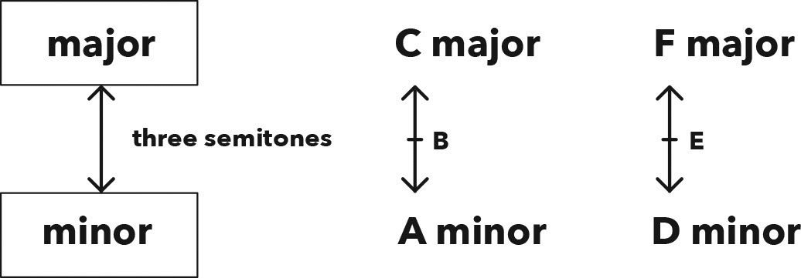

Finding Relatives 寻找关系调
Hack
To find the relative minor, count three semitones down in pitch from the major scale root.
要找到相关小调，从大调音阶的根音开始向下数三个半音。
To find the relative major, count three semitones up in pitch from the minor scale root.
要找到关系大调，从小调音阶的根音向上数三个半音。
Remember, there is always a note (i.e. letter) skipped between the roots of relative scales, aka relative keys.
请记住，关系音阶（即关系调）的根音之间总是跳过一个音符（即一个字母）。

Figure 6.1 Shortcut to finding relative keys
图 6.1 关系调的快捷查找方法
| Majors to relative minors 大调到关系小调 (three semitones down) （下降三个半音） | Minors to relative majors 小调到关系大调 (three semitones up) （上升三个半音） |
|---|---|
| B major = G♯ minor | D minor = F major |
| E♭ major = C minor | B♭ minor = D♭ major |
Figure 6.2 Examples of relative keys
图 6.2 关系调的示例
Chapter
Have you seen the film Finding Nemo?
你看过《海底总动员》这部电影吗？
Yeah, finding relatives isn’t anything like that, but the fish are so cute, aren’t they?
是的，寻找关系调可不像那电影，但鱼儿们真的很可爱，不是吗？
Okay, back to work.
好了，回到正题。
If you’re in a major key and want to find its relative minor, play the same scale but start on the 6th note.
如果你在大调里，想找到它的关系小调，就用同样的音阶，但是从第六个音开始。
And, if you’re in a minor key and want to find its relative major, play the same scale but start on the 3rd note.
如果你在小调里并且想找到它的关系大调，就用同样的音阶，但从第三个音符开始。
This method is great, but there’s a much quicker way to find relatives, which will save you from having to first figure out the scale and only then count up.
这种方法很好，但有一个更快的方法可以找到关系调，这样你就不用先找出音阶再数数了。
You know from the previous chapter that C major and A minor are relatives.
你知道在上一章中提到，C 大调和 A 小调是关系调。
The roots C and A are three semitones apart, and we can use this as a shortcut to find any relative.
C 和 A 的根音相差三个半音，我们可以用这个来快捷找到任何关系调。
To find the relative minor, count three semitones down in pitch (e.g. C down to A).
要找到关系小调，从音高下降三个半音（例如 C 到 A）。
To find the relative major, count three semitones up in pitch (e.g. A up to C).
要找到关系大调，从音高上升三个半音（例如 A 到 C）。
The way I remember which direction to move is by thinking of the literal meanings of major as important and minor as less important.
我记住该往哪个方向数的方法是，根据“major”（大调/重要的）和“minor”（小调/不那么重要的）这两个词的字面意思。
By these definitions, majors are above minors, so you would count down from a major to a minor, and up from a minor to a major.
根据这些定义，大调高于小调，所以你会从大调向下降到小调，从小调向上升到大调。
Let’s practice this shortcut with an example.
让我们用一个例子来练习这个技巧。
If we’re in the key of E major, what is the relative minor?
如果我们处于 E 大调，那么它的关系小调是什么？
Take a minute to work it out, by counting three semitones down from E.
花一分钟时间算一算，从 E 开始数三个半音。
Did you get D♭ minor?
你得到的是 D♭ 小调吗？
If you did, congrats, you landed on the right note.
如果是，恭喜你，找到了正确的音符。
But, as we can see from the original C major and A minor relatives, there is a note (i.e. letter) skipped – B – between their roots.
但是，从最初的 C 大调和 A 小调的关系来看，它们的根音之间跳过了一个音符（即字母 B）。
Therefore, D♭ minor can’t be the relative of E major, as their roots are adjacent letters.
因此，D♭ 小调不能是 E 大调的关系调，因为它们的根音是相邻的字母。
Having said that, though, we’re certain about the D♭ as it’s definitely three semitones down from E.
不过，可以肯定的是，D♭ 确实是从 E 开始往下降的三个半音。
This means we’ve got the correct note but the incorrect name for it.
这意味着我们得到了正确的音符，但名字不对。
There’s an easy solution to this problem that often arises.
这个常见问题有一个简单的解决方法。
Whenever we know for sure that we’re on the right note, but its name is wrong, we call on our enharmonic friends.
每当我们确定自己得到了正确的音符，但名称不对时，我们可以求助于等音。
What’s the enharmonic equivalent (other name) for D♭? D♭ 的等音（另一名称）是什么？
Yep, C♯.
对，是 C♯。
That means C♯ minor is the relative of E major.
这意味着 C♯ 小调是 E 大调的关系调。
We haven’t even worked out the E major scale yet, but we already know its relative.
我们甚至还没计算出 E 大调音阶，就已经知道了它的关系调。
That’s a good shortcut! Here are a few more examples to test out your new trick:
这是一个很好的捷径！这里有一些例子让你测试新技巧：
| Majors to relative minors 大调到关系小调 (three semitones down) （下降三个半音） | Minors to relative majors 小调到关系大调 (three semitones up) （上升三个半音） |
|---|---|
| B major = G♯ minor | D minor = F major |
| E♭ major = C minor | B♭ minor = D♭ major |
Remember, in order to properly switch into the relative, you need to emphasise the new root, otherwise it’ll sound like you’re still in the same key.
请记住，为了正确地转换到关系调，你需要强调新的根音，否则听起来会像还在同一个调性中。
If I’m playing in D minor and want to change to F major in order to lighten the emotion of my song, it won’t happen unless I actively make F sound more important than D.
如果我正在 D 小调中演奏，并且想切换到 F 大调以使歌曲的情感更轻快，除非我主动让 F 音变得比 D 音更重要，否则是不可能实现的。
There are numerous ways we can make a note sound prominent, like starting or finishing the melody on it, or playing it longer or louder than the other notes.
有很多方法可以让一个音显得出众，比如用它开始或结束旋律，或者演奏得比其他音符更长或更响。
In this D minor song, the instant our ears are drawn to F as the new home, we’ve switched into the relative major and our mood will lift.
在这首 D 小调的歌曲中，当我们的耳朵被 F 吸引为新的主音时，我们就切换到了关系大调中，我们的情绪也会得到提升。
Easy peasy.
简单轻松。